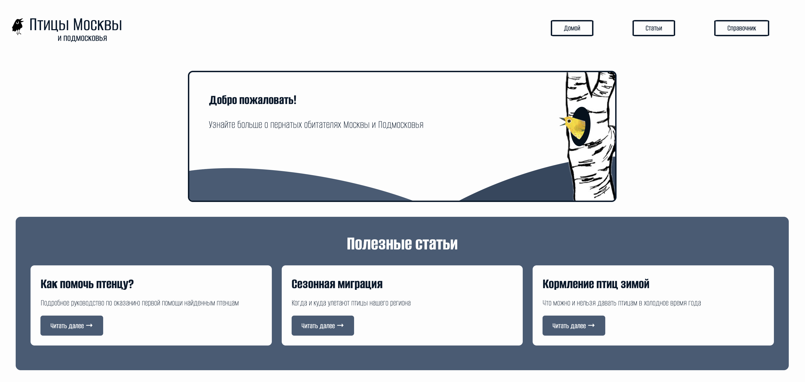

← Все проекты

О проекте
Многостраничный познавательный сайт о птицах Москвы и Подмосковья. В нём есть справочник видов с подробными карточками, раздел статей о том, как помогать птицам и как их наблюдать, и шуточный тест «Какая ты подмосковная птица?». Все страницы, вёрстку и логику сделала сама, без готовых шаблонов и библиотек.
Возможности
- Справочник на 25+ видов. Птиц можно фильтровать по типу питания (хищные, всеядные, зерноядные, насекомоядные), фильтр написан на JS. Есть блок статистики.
- Карточка вида у каждой птицы: латинское название, систематика, охранный статус, размер, вес и размах крыльев, где обитает, чем питается, как размножается, голос и поведение, интересный факт.
- 12 статей: первая помощь птенцу, реабилитация раненых птиц, зимняя подкормка, миграции, определение птиц по голосу, фотоохота, Красная книга и другие темы. В длинных статьях есть липкое оглавление с якорными ссылками.
- Интерактивный тест из 8 вопросов. Есть прогресс-бар, можно вернуться к предыдущему вопросу, кнопка «Далее» не работает, пока не выбран ответ. Результат считается по количеству совпадений, после него показывается описание птицы, черты характера и ссылка на её карточку в справочнике.
- Адаптивная вёрстка: на экранах уже 800px появляется бургер-меню, а сетки перестраиваются в одну колонку.
Фишки
-
Анимированная hero-иллюстрация на чистом CSS. Холмы
сделаны из повёрнутых эллипсов, в дереве есть дупло. Когда наводишь
курсор на баннер, из дупла выглядывает птица: она лежит в
контейнере с
overflow: hidden, поэтому при движении видна только её часть. -
Бургер-меню без единой строки JS. Оно работает на
скрытом чекбоксе и селекторе
:checked + label. Иконка превращается в крестик за счёт::before/::after,box-shadowи переходов с задержкой. -
«Парящие» птицы в блоке теста. Это CSS-анимация
@keyframes float, у каждого кружка своя задержкаanimation-delay, поэтому птицы покачиваются вразнобой. - Данные теста отделены от логики. Вопросы и результаты хранятся в JS-объектах, а интерфейс собирается из них динамически. Чтобы добавить вопрос или новую птицу, достаточно дописать одну запись.
- Ироничный тон теста: «Заложник экстравертов», «Сова. Они не мудрые, это вредные коты с крыльями». Это делает сайт живее обычного справочника.
Технологии
HTML5, CSS3 (Flexbox, Grid, анимации, media queries), чистый JavaScript без фреймворков, Google Fonts, хостинг на GitHub Pages.
Чему научилась
- Вёрстке без фреймворков: Flexbox, Grid с auto-fit/minmax, позиционированию и z-index, работе с overflow.
- Делать адаптивность через media queries, а интерактив вроде бургер-меню собирать на CSS-хаках, без JS.
- Работать с DOM на JavaScript: искать элементы, переключать классы, создавать элементы динамически, обрабатывать события.
- Хранить состояние интерфейса (текущий вопрос, ответы) и строить экраны по данным, а не прописывать их вручную.
- Держать единый визуальный стиль на 40+ страницах: общая палитра и шрифт, общие стили вынесены в отдельный CSS-файл.
- Оформлять информационные страницы: делать удобную навигацию по длинным текстам и чётко разбивать карточки на блоки.
- Публиковать статический сайт через GitHub Pages.